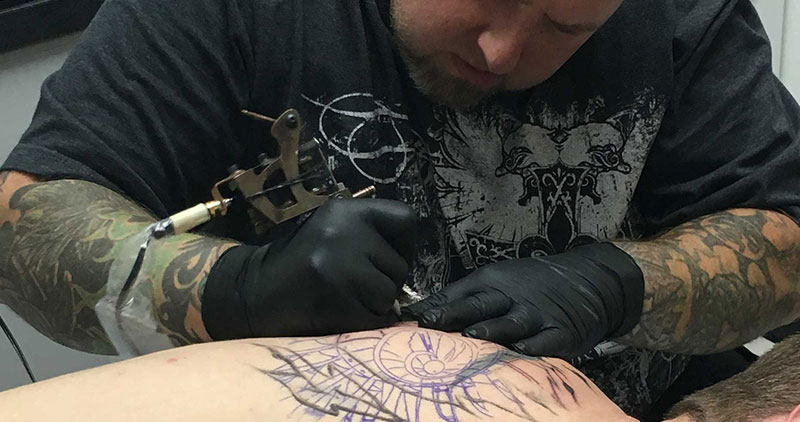

Services
Custom Tattoo Designs
Liquid Chaos is a custom tattoo shop offering many different styles providing your own unique
experience. Whether it be portraits, new shcool, black and gray realism, or traditional, we've got it
covered. You can bring in your own art, or we can draw something up to your specific requests. Each
tattooer is very skilled in giving you what you evisioned. Come check us out and let us know
how we can help you achieve your tattoo goals.
Creative Cover Ups
Liquid Chaos prides itself on giving you the tattoo you want, even if you've made mistakes in
the past. We won't cover anything up if we don't think it will hold true to our standards. What
are you waiting for? Lets get rid of that EX'es name.
Professional Piercing
At Liquid Chaos we offer the highest quality piercing around. We use high grade internally threaded
jewelry for every single piercing. Our staff has over a decade of expericne in making sure the
piercing you get not only looks good, but is safe for your body as well. We sell the highest quality
materials for cleaning them and keeping them healthy, just ask the staff for assistance.